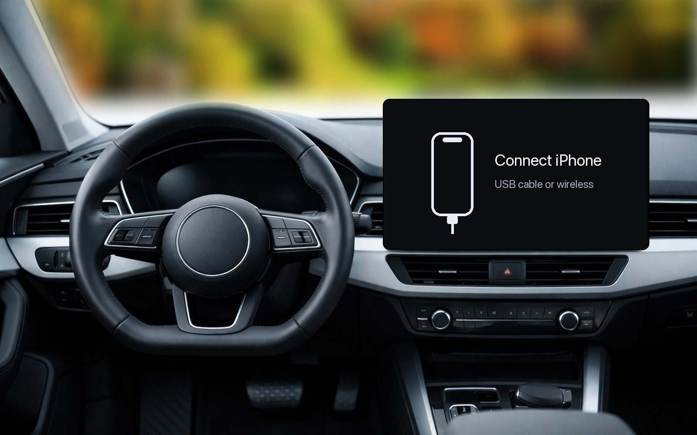
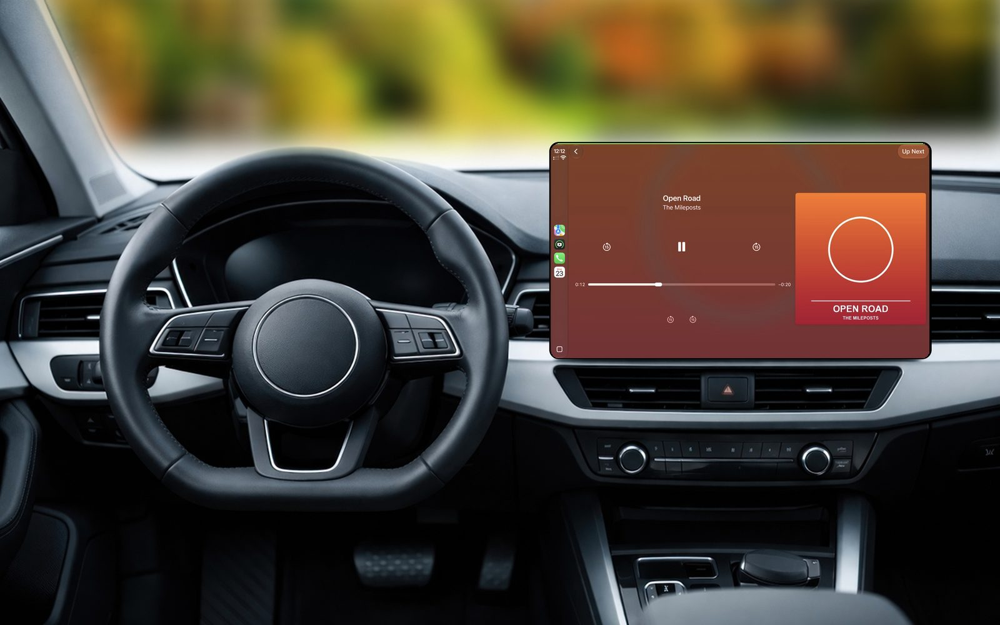
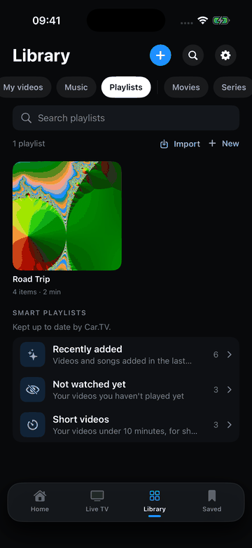

Cách dùng Car.TV
Từng tính năng, từng bước một, và cách dùng trên xe.
Mục lục
- Xem phần giới thiệu
- Kết nối CarPlay
- Bắt đầu
- TV trực tiếp
- Lịch phát sóng
- Thư viện
- Video của tôi
- Nhạc
- Danh sách phát
- Một danh sách phát
- Trình phát
- Chế độ xe
- Đã lưu
- Trình duyệt
- Truyền qua Wi-Fi
- Cài đặt
- Câu hỏi
Xem phần giới thiệu
Kết nối CarPlay
- Kiểm tra xe của bạnCar.TV chỉ hiển thị video trên màn hình xe ở những xe hỗ trợ video trong CarPlay, với iOS 26.4 trở lên. Các xe khác sẽ phát âm thanh. Vào Cài đặt › Kiểm tra xe để biết xe của bạn làm được gì.

- Cắm cáp hoặc không dâyKết nối iPhone với cổng USB CarPlay của xe bằng cáp, hoặc dùng CarPlay không dây nếu xe có hỗ trợ.

- Bật CarPlay trên iPhoneCài đặt › Cài đặt chung › CarPlay › chọn xe của bạn. Bật “Cho phép CarPlay khi bị khóa”.

- Tìm Car.TV trên màn hình xeChạm vào Car.TV trên màn hình chính CarPlay. Không thấy? Trên iPhone: Cài đặt › Cài đặt chung › CarPlay › xe của bạn › Tùy chỉnh › Ứng dụng.

- Chọn nội dung để xemTV trực tiếp, Video của tôi, Nhạc và Danh sách phát có trên màn hình xe, giống như trên điện thoại.

- Video khi xe đỗKhi xe chạy, CarPlay dừng hình và Car.TV vẫn phát âm thanh; điện thoại hiển thị “Màn hình xe · chỉ âm thanh”.

- Nút trên vô lăngKhi xem TV trực tiếp, nút tiếp và trước sẽ đổi kênh. Tắt tính năng này trong Cài đặt › Phát lại.
- Hành khách: Chế độ xeTrên điện thoại, Chế độ xe hiển thị ô lớn và nút lớn. Người lái xe, hãy luôn nhìn đường.

Bắt đầu
- Chào mừng bạn đến với Car.TVTV trực tiếp, phim, video và nhạc của bạn, trên iPhone, trên TV và trên màn hình xe khi đỗ. Đây là phần giới thiệu 1 phút.
- Thêm mọi thứ tại đâyDanh sách phát IPTV (M3U), cổng Xtream, máy chủ Jellyfin, Emby hoặc Plex, thư mục đám mây, hoặc video từ Tệp và Ảnh.
- Tìm kiếm mọi thứKênh, phim, phim bộ, video và bài hát của riêng bạn.
- Cài đặtNguồn của bạn, Premium, ngôn ngữ, Chế độ xe, khóa trẻ em và hướng dẫn này.
- Trang chủTiếp tục từ chỗ bạn dừng lại: Tiếp tục xem, Đang phát và Mới trong thư viện.
- TV trực tiếpMọi kênh, theo quốc gia hoặc theo bộ lọc. Nhấn giữ một kênh để xem lịch phát sóng và Mục ưa thích.
- Thư việnCủa bạn trước tiên: Video của tôi, Nhạc và Danh sách phát phát ngoại tuyến. Phim và Phim bộ đến từ nguồn của bạn.
- Đã lưuMục ưa thích và bản tải về, cho lúc không có sóng.
- Chưa có danh sách phát?Thử các kênh mẫu và mở phim để xem mọi thứ hoạt động thế nào.
- Trình phátMở toàn màn hình. Vuốt xuống để tiếp tục phát trong một thanh nhỏ khi bạn duyệt.
- Đưa tệp của bạn vàoGửi video và nhạc từ máy tính bằng Truyền qua Wi-Fi, hoặc lưu từ web bằng Trình duyệt.
- Dùng Car.TV trên xe?Xem cách kết nối CarPlay từng bước. Bạn có thể xem lại phần giới thiệu này bất cứ lúc nào trong Cài đặt › Cách dùng Car.TV.
TV trực tiếp

- Tìm kênhTìm mọi kênh theo tên.
- Hai bố cục, quốc gia, bộ lọcLàn hoặc Hàng; kênh theo quốc gia; lọc theo ngôn ngữ, danh mục và chất lượng.
- Nhấn giữ một kênhLịch phát sóng, Mục ưa thích và Sửa lịch phát sóng khi thiếu lịch chương trình.
Lịch phát sóng
- Vuốt qua các khung giờChạm vào chương trình đang phát để xem.
- Xem lạiChương trình đã phát trên kênh có lưu trữ sẽ có Xem từ đầu.
Thư viện
- Tệp của riêng bạnVideo của tôi, Nhạc và Danh sách phát. Phát ngoại tuyến, khi đi đường và trên xe.
- Từ nguồn của bạnPhim và phim bộ từ danh sách phát và máy chủ của bạn. Lọc theo nguồn hoặc danh mục, và sắp xếp.
- Tìm trong kệ nàyChỉ tìm trong kệ bạn đang xem.
- Thư viện ghi nhớThư viện mở ở kệ bạn dùng gần nhất.
Video của tôi
- Nhấn giữ một videoPhát tiếp theo, Thêm vào danh sách phát, Đổi tên, Chọn hình ảnh, Chuyển vào thư mục, Chia sẻ hoặc Xóa.
- Chọn nhiều mụcDi chuyển, xếp hàng chờ hoặc xóa nhiều video cùng lúc.
- Sắp xếp và chế độ xemTheo ngày, tên, kích thước, thời lượng hoặc lần phát gần nhất, dạng lưới hoặc danh sách. Dung lượng cũng ở đây.
- Thêm videoTừ Tệp hoặc Ảnh, từ máy tính bằng Truyền qua Wi-Fi, hoặc từ web.
Nhạc
- Bài hát, Album, Nghệ sĩDuyệt nhạc theo cách bạn thích.
- Vuốt một bài hátVuốt sang phải để thêm vào danh sách phát. Vuốt sang trái để sửa chi tiết hoặc xóa. Nhấn giữ để Phát tiếp theo.
- Hẹn giờ ngủNhạc tự dừng sau khoảng thời gian bạn chọn.
Danh sách phát
- Danh sách phát mớiKết hợp video và bài hát theo thứ tự của bạn, cho hàng ghế sau hoặc trên đường đi.
- NhậpMang danh sách phát .m3u từ ứng dụng khác vào.
- Danh sách phát thông minhTự động cập nhật: mới thêm gần đây, chưa xem, video ngắn và hơn thế nữa.
Một danh sách phát

- Ảnh bìa của bạnChọn ảnh bìa từ Ảnh hoặc một khung hình của video: ⋯ › Ảnh bìa.
- Phát hoặc phát ngẫu nhiênToàn bộ danh sách phát, ngoại tuyến khi mọi thứ đều có trên thiết bị này.
- Lặp lại, tốc độ, trình chiếuMỗi danh sách phát có chế độ lặp lại và tốc độ riêng. Thêm ảnh để ảnh hiển thị toàn màn hình trong khi phát bài hát.
- ThêmThêm video hoặc bài hát, sửa chi tiết, ghim, nhân bản, xuất dưới dạng M3U. Kéo để sắp xếp lại; vuốt sang trái để gỡ bỏ.
Trình phát

- Chạm vào hìnhHiện hoặc ẩn các nút điều khiển.
- Bỏ qua 15 giâyLùi hoặc tiến 15 giây; nút ở giữa để tạm dừng.
- Hình, âm thanh và hơn thế nữaVừa khung, Lấp đầy hoặc Phóng to; bản âm thanh; phụ đề; tốc độ; đồng bộ âm thanh/hình ảnh.
- Phát trên TVAirPlay, Google Cast hoặc TV thông minh DLNA trong mạng Wi-Fi của bạn.
- Chế độ xeNút lớn cho hành khách.
- Tiếp tục phátĐóng hoặc vuốt xuống: nội dung vẫn phát trong thanh nhỏ.
Chế độ xe

- Dành cho hành kháchÔ lớn và nút lớn. Người lái xe, hãy luôn nhìn đường.
- Thoát Chế độ xeQuay lại ứng dụng đầy đủ.
Đã lưu
- Mục ưa thích và bản tải vềNhấn giữ một kênh hoặc mở một bộ phim rồi chạm vào Thêm vào Đã lưu. Bản tải về phát được cả khi không có sóng.
Trình duyệt
- Tìm kiếm hoặc nhập địa chỉTrang bắt đầu lưu mục ưa thích và các trang bạn hay truy cập.
- TabNhiều trang cùng lúc, và tab riêng tư không lưu lịch sử.
- Lưu từ trang nàyLưu nhạc và video mà bạn có quyền giữ. Bài hát vào Nhạc, video vào Video của tôi.
Truyền qua Wi-Fi
- Bật máy chủSau đó mở địa chỉ hiển thị trên máy tính cùng mạng Wi-Fi và thả tệp của bạn vào.
- Giữ màn hình này mởQuá trình truyền sẽ dừng khi bạn rời màn hình này. Bài hát vào Nhạc, video vào Video của tôi.
Cài đặt
- Nguồn của bạnThêm, sửa, làm mới hoặc tắt danh sách phát và máy chủ.
- Hướng dẫn nàyXem lại phần giới thiệu, kết nối CarPlay và đọc hướng dẫn bằng ngôn ngữ của bạn.
Câu hỏi
Vì sao màn hình xe chỉ phát âm thanh khi tôi lái xe?
Đây là cách video hoạt động trong CarPlay, vì lý do an toàn: hình chỉ hiển thị khi xe đang đỗ. Khi xe chạy, CarPlay dừng hình và âm thanh vẫn tiếp tục phát. Không ứng dụng nào thay đổi được điều này.
Car.TV không có trên màn hình xe của tôi. Vì sao?
Car.TV chỉ xuất hiện ở những xe hỗ trợ video trong CarPlay, với iOS 26.4 trở lên. Kiểm tra Cài đặt › Cài đặt chung › CarPlay › xe của bạn › Tùy chỉnh › Ứng dụng, và xem Kiểm tra xe trong Cài đặt của Car.TV.
Car.TV có sẵn kênh không?
Không. Car.TV phát những gì bạn thêm vào: danh sách phát hoặc cổng IPTV mà bạn có quyền truy cập, máy chủ đa phương tiện của bạn, hoặc video và nhạc của riêng bạn. Thử danh sách phát mẫu để xem cách hoạt động.
Nội dung nào phát được khi không có internet?
Mọi thứ trong Video của tôi và Nhạc, bản tải về của bạn, và danh sách phát tạo từ chúng. Danh sách phát sẽ cho bạn biết khi một mục cần internet.
Làm sao để đưa video và nhạc của tôi vào Car.TV?
Từ Tệp hoặc Ảnh bằng nút +, từ máy tính bằng Truyền qua Wi-Fi, qua AirDrop hoặc nút Chia sẻ, hoặc từ web bằng Trình duyệt.
Làm sao để tạo danh sách phát có trình chiếu ảnh?
Thư viện › Danh sách phát › Mới, thêm bài hát, rồi chọn Thêm trình chiếu và chọn ảnh. Phát danh sách phát và ảnh sẽ lấp đầy màn hình trong khi phát bài hát.
Danh sách phát của tôi có hiện trên các thiết bị khác không?
Có, khi dùng Premium và bật Đồng bộ iCloud trong Cài đặt. Video và bài hát vẫn ở trên thiết bị mà chúng được thêm vào, nên danh sách phát trên thiết bị khác sẽ hiện những gì thiết bị đó có.
Car.TV có thu thập dữ liệu của tôi không?
Không. Không có tài khoản, không quảng cáo và không theo dõi. Nguồn, danh sách phát và ảnh của bạn ở trên thiết bị của bạn và, nếu bạn bật, trong iCloud của riêng bạn.
Còn câu hỏi? Xem trang Hỏi đáp →
Không bao giờ xem video khi đang lái xe. CarPlay chỉ hiển thị video khi xe đang đỗ; khi lái xe, người lái chỉ nên nghe.